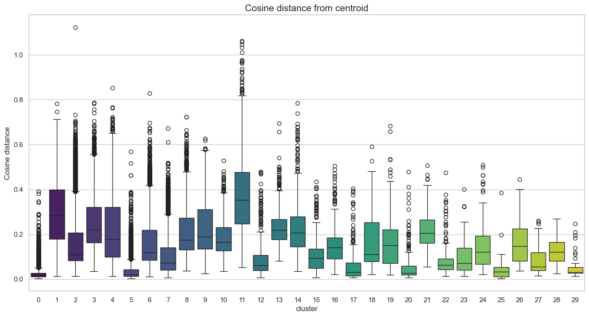
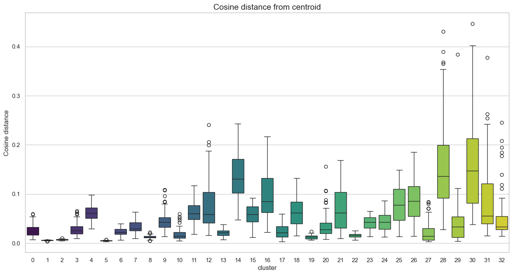
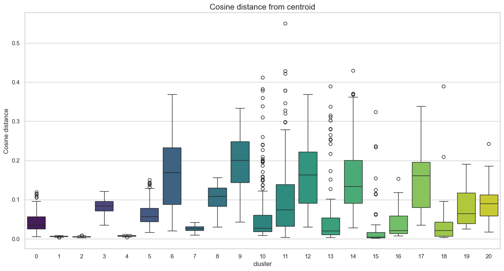

TODO: TLDR Section
Maybe add a tldr, could emphasise that we are answering from a "user" perspective. I'm not 100% convinced.
It's not the first time I've seen such sentiments around here. Actually, I find it super interesting,
as such discussions about "linguistic quality" are not recent. In fact, you can find them pretty much
at any point since we've begun to standardise our languages. Still, with the rise of social media
and instant messaging, such perceptions have been on the rise and it could be interesting to know
if they are based on actual data. And if so, what motivates the difference of language quality between users.
Should we add here the different research questions? Or do we keep the "comment based approach"? Or both?
1. Dataset
Hyperlinks
[Introduce what our dataset is]
Embeddings
Introduction
Along with the initial subreddit hyperlinks dataset, we used another dataset:
the embedding vectors of subreddits (available on the SNAP website).
These embeddings are high-dimensional vectors (in our case, 300 dimensions).
They are designed to represent similarities between data points in a complex space.
Specifically, each of the ~50,000 subreddits is assigned a 300-dimensional vector.
These vectors indicate similarity based on user behavior: if many users post in
the same group of subreddits, those subreddits will be closer to each other in this
300-dimensional space.
These embeddings are very useful for our research on linguistic quality and our goal to determine
'who speaks the best.' They allow us to identify clusters of subreddits where users share similar
interests, effectively grouping subreddits into distinct communities.
Weakness
While these embeddings are powerful and perform well, the dataset faces challenges due to the
nature of Reddit communities and the high number of data.
"One might assume that a dataset of 50,000 subreddits is relatively small. However, each
entry is a 300-dimensional vector, and determining similarity requires computing a pairwise
distance matrix. Calculating the similarity between every possible pair of subreddits is a computationally
intensive task... To overcome this technical hurdle, we implemented a batch processing approach."
Indeed communities are not perfectly separated into 'clean' clusters where we can easily say:
'These users are only interested in politics.' Most users have diverse interests and post in a wide
variety of subreddits. This creates a significant amount of overlap between vectors.
Visualizing the Embedding Weaknesses
The following graphs illustrate the weakness mentioned previously.
- Figure 1: A 2D projection shows vectors forming a large, dense circle with significant overlap.
- Figure 2: The distribution of close neighbors reveals subreddits with over 10,000 neighbors (>80% similarity).
Figure 1: 2D Projection of Subreddits
Figure 2: Distribution of Close Neighbors
2. What is language quality?
The first thing we need to know when trying to understand language quality on reddit, is to actually
define what language quality is. We needed to find a way to operationalise such a concept.
Thus, I decided to take an approach that combined both what our data provided and what different
measures suggested "quality" is.
{% include metrics_accordion.html %}
TODO: Develop on the insights of these features. Explain why distributions look like this.
As you can see in this correlation matrix, our chosen features do not seem to overlap,
showing that they each embody one aspect of Linguistic cognition and thus capture meaningful language patterns.
3. Linguistic quality within specific subreddits
Comparison of metrics distribution of best and worst subs (min 500 posts)
TODO: Add analysis here regarding the plot above. Why do specific subs score high/low?
4. Linguistic variation within a topic/community

Introduction
What is a community? Oxford Languages defines it as: 'a group of people living in the same place
or having a particular characteristic in common.' Applying this to Reddit, we aim to group subreddits
with similar vector representations into distinct clusters.
Methodology
Clustering Strategy and Challenges
The primary challenge stems from "bridges": subreddits frequented by users from
vastly different backgrounds. These bridges exhibit a high number of neighbors, making them notoriously
difficult to classify.
- Why K-means Failed: It forces high-dimensional "clouds" into rigid spheres.
- The Density Limitation of HDBSCAN: It proved too selective, labeling too much data as noise.
- Solution (Network-Based Approach): We constructed a k-Nearest Neighbors (k-NN) graph and applied the Leiden algorithm.
To refine the methodology, three key improvements were implemented:
- Scope Restriction: Clustering performed exclusively on subreddits in our dataset.
- Recursive Refinement: Noisy groups were re-processed to achieve finer granularity.
- Representative Sampling: Only the 250 subreddits closest to each cluster's centroid were retained.

Distribution after first clustering (No Filter)

Distribution after keeping only 250 best subreddits
The second plot demonstrates a clear improvement following the distance-based pruning.
We achieved a substantial noise reduction, with most distances falling below a 0.5 threshold.
Cluster Results
Relevant Clusters & Labels
- 2: Gaming / PC
- 4: Popular / Memes
- 6: Webmarketing / Dev
- 7: Adult Content
- 9: Music
- 10: TV / Movies
- 12: Feminine Celebrity
- 13: Sports (US)
- 14: Sports (Soccer)
- 15: League of Legends
- 16: Crypto / Blockchain
- 17: Fiction / Art
- 18: My Little Pony
- 19: YouTube / Creators
- 21-22: Adult Content
- 23: Japanese Subreddits
- 24: K-Pop
- 25: Metafandom
- 26: Wrestling
- 27: Retrogaming
- 28: Vape
- 29: Educational Video
Centroid Examples
Cluster 2 (Gaming): oxygennotincluded, swgemu, speedrunnersgame, pokemmo, hollowknight...
Cluster 9 (Music): soothing, noise, music_share, selfmusic, underground_music...
Cluster 16 (Crypto): bitcoinuk, counterparty_xcp, trezor, augur, lisk...

Clustering generated from noise (2nd Pass)
New Clusters Found
- 100: R4R / Personals
- 103: Politics / Academics
- 107: Adult Content
- 108: US States and Cities
- 109: Radical Politics
- 111: Adult Content
- 112: India
- 113: Image Of
- 114: Germany
- 115: News Auto
- 116: Radical Politics
- 117: Sweden
- 120: Russia
Final Community Map
Interactive Community Map (Click communities on the legend to isolate)
Observations
- Most clusters are dense and well-separated.
- Outliers: Some points like gamingnews ended up in "My Little Pony", but visual geography shows it physically located near "Retrogaming", proving the map works even if labels aren't 100% perfect.
- Fragmentation: "Adult Content" is split into multiple clusters to avoid grouping distinct niches, but we labeled them under one umbrella.
TODO: Introduce cluster methodology. Apply profile score within a community + plots 5/6.
5. Linguistic variation across all reddit
[Present top 10 / bottom 10 across the whole dataset + insights]
Depending on how robust the topic modeling is, we could aggregate results again.
6. Linguistic quality and negativity
[Linguistics features by post sentiment plot]
[Further analysis?]
7. Conclusion
TODO: Conclusion text.
Structure / To-Do List
- 1. What is language quality? (Intro, Dataset, Metrics)
- 2. Linguistic quality within specific subreddits
- 3. Linguistic variation within a topic/community
- 4. Linguistic variation between different topics/communities
- 5. Linguistic quality and negativity
- 6. Conclusion
Research Questions:
- RQ1
- RQ2